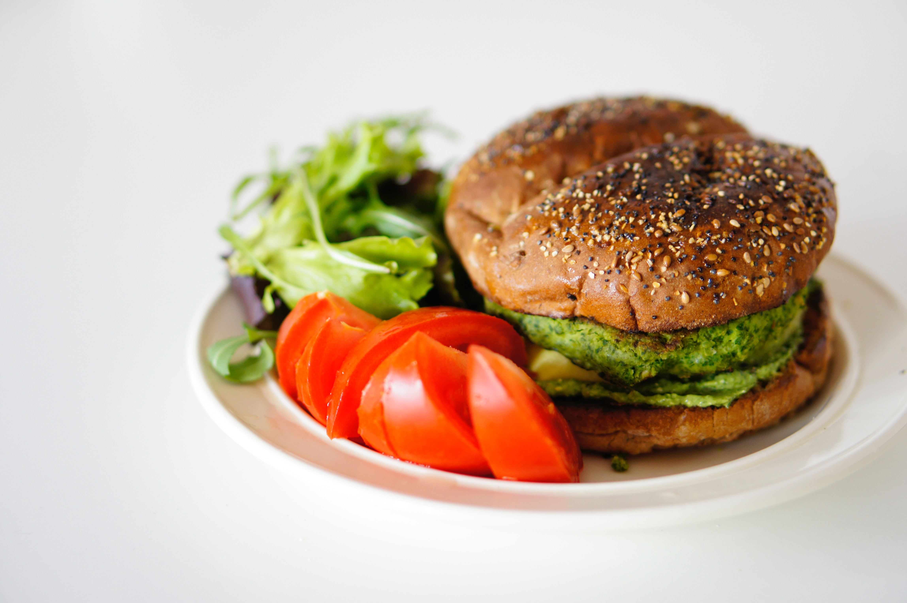

Veggie Burger

Veggie Burger
Burgers that taste like hamburgers, but without meat!
This vegetarian burger is as close as I've ever gotten to delicious non-meat
burgers
Ingredients
- 2 teaspoons olive oil
- 1 small onion, grated
- 2 cloves crushed garlic
- 1 small zucchini, shredded
- 1 ½ cups rolled oats
- ¼ cup shredded Cheddar cheese
- 1 tablespoon soy sauce
- 1 ½ cups all-purpose flour
Directions
-
Heat the olive oil in a skillet over low heat, and cook the onion and garlic
for about 5 minutes, until tender. Mix in the carrots, squash, and zucchini.
Continue to cook and stir for 2 minutes. Remove pan from heat, and mix in
oats, cheese, and egg. Stir in soy sauce, transfer the mixture to a bowl,
and refrigerate 1 hour.
- Preheat the grill for high heat.
-
Place the flour on a large plate. Form the vegetable mixture into eight 3
inch round patties. Drop each patty into the flour, lightly coating both
sides.
-
Oil the grill grate, and grill patties 5 minutes on each side, or until
heated through and nicely browned.
Back to main menu